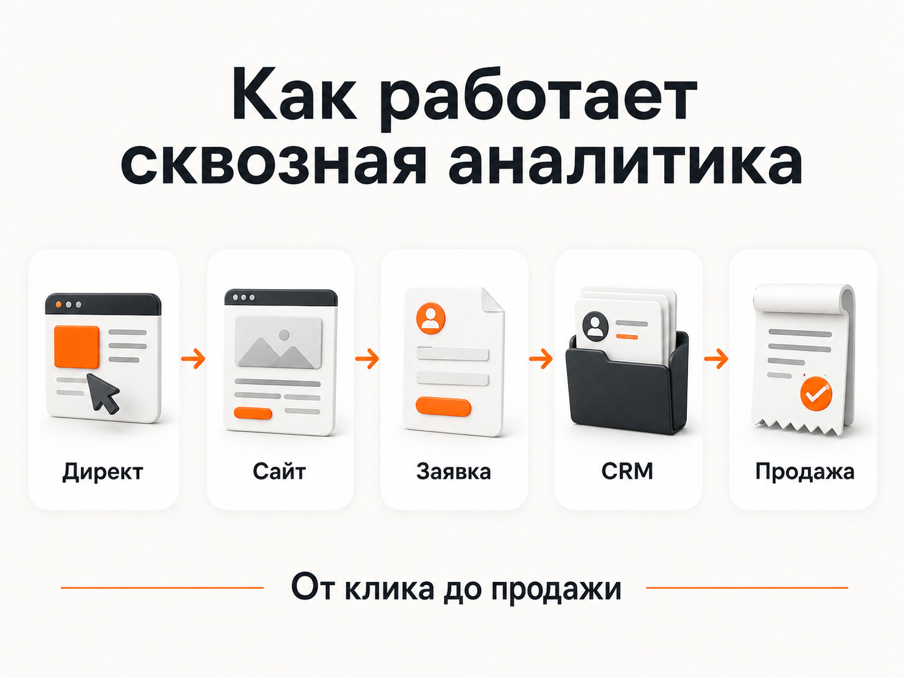
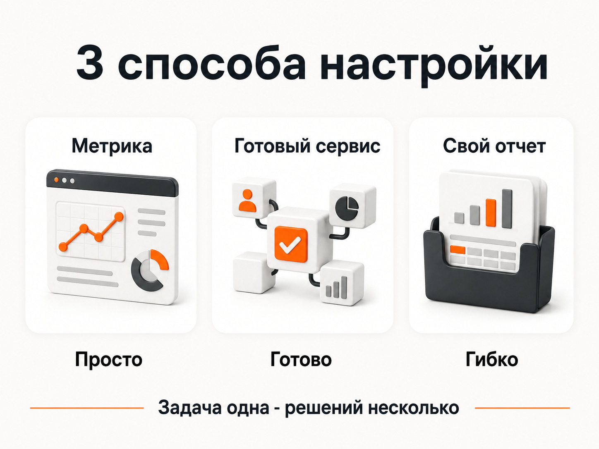
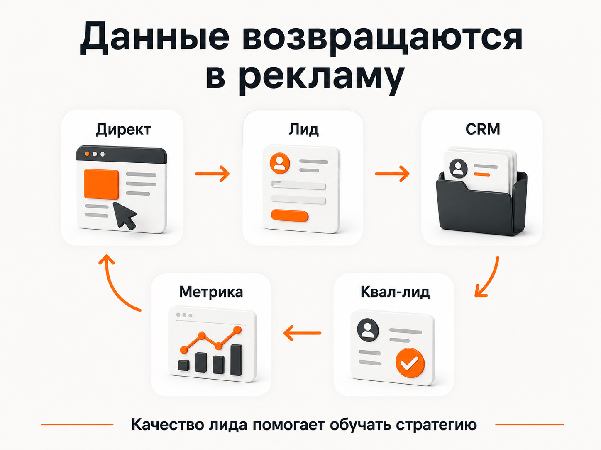

Блог о платном трафике
Сквозная аналитика Яндекс Директ: как связать рекламу с заявками и продажами
Сквозная аналитика связывает рекламные расходы с качеством обращений, продажами, выручкой и прибылью.
Сквозная аналитика для Яндекс Директа нужна, когда статистики по кликам и заявкам уже недостаточно. Она позволяет связать рекламные расходы с тем, что произошло дальше: качеством обращения, продажей, выручкой и прибылью.
Принцип всегда примерно один:
Яндекс Директ -> переход на сайт -> обращение -> CRM -> продажа -> отчет
Реализовать эту цепочку можно по-разному. Использовать Яндекс Метрику, подключить Roistat или Calltouch, собрать отчет в BI-системе или вообще разработать собственный дашборд. Главное здесь не конкретный сервис, а корректная связь данных между этапами.
Как работает сквозная аналитика Яндекс Директа
Допустим, из одной рекламной кампании пришло 20 заявок по 2 000 рублей, а из другой - 10 заявок по 3 000 рублей.
Если смотреть только Директ или обычные цели Метрики, первая кампания выглядит выгоднее.
Но после проверки CRM может оказаться, что из первых 20 обращений была одна продажа, а из вторых 10 - четыре продажи.
Вот для ответа на такие вопросы и нужна сквозная аналитика.
В одном отчете обычно объединяются:
- расходы и рекламная статистика Яндекс Директа;
- информация о визитах на сайте;
- заявки из форм;
- звонки;
- обращения через другие каналы;
- данные CRM;
- статусы лидов и сделок;
- продажи;
- выручка и при необходимости себестоимость.
После этого можно считать уже стоимость нужного бизнесу результата, а не только стоимость отправленной формы.

UTM-метки - основа связи между рекламой и данными
При построении собственной системы или использовании сторонней сквозной аналитики большое значение имеют UTM-метки.
Например, по ним можно определить:
- рекламный источник;
- тип трафика;
- кампанию;
- объявление;
- дополнительный параметр рекламного перехода.
Яндекс Метрика также использует UTM-разметку при объединении данных о рекламных расходах с визитами. Roistat может строить отчеты по UTM или добавлять собственную метку к рекламным ссылкам.
Но одной UTM-разметки недостаточно.
UTM говорит системе, откуда пришел пользователь. Дальше нужно связать этого посетителя с конкретной заявкой или сделкой в CRM.
Для этого Яндекс рекомендует сохранять ClientID Метрики. При передаче CRM-данных ClientID обеспечивает наиболее качественную привязку заказа к визиту. Дополнительно могут использоваться телефон и email.
Получается две разные задачи:
UTM -> откуда пришел клиент
ClientID и другие идентификаторы -> какой визит связан с конкретным клиентом и сделкой
Это полезно разделять. Сквозная аналитика ломается довольно быстро, если пытаться решить обе задачи только одной UTM-меткой.
Как учитывать звонки и обращения по email
Форма на сайте отслеживается относительно просто. Пользователь отправил заявку, сайт передал источник и ClientID в CRM.
Со звонками сложнее.
Для этого используется коллтрекинг. Сервис динамически подменяет телефонный номер на сайте и связывает звонок с источником или конкретным визитом пользователя. После звонка информация может передаваться в CRM и попадать в общий отчет. Так работают, например, системы коллтрекинга Roistat и Calltouch.
Похожая механика существует для электронной почты. Email-трекинг подменяет адрес на сайте, а после получения письма позволяет определить рекламный источник обращения. Такая функциональность, например, есть в Roistat.
Если значительная часть клиентов звонит или пишет напрямую, без этих данных сквозной отчет будет неполным.
Три способа настроить сквозную аналитику
Я бы не искал один универсальный сервис. Способ зависит от того, насколько сложный отчет нужен бизнесу.
Яндекс Метрика + CRM
Самый очевидный вариант для Яндекс Директа - использовать возможности самой Метрики.
Сейчас в нее можно передавать клиентов и заказы из CRM, статусы сделок, выручку, себестоимость и собственные статусы. После этого доступны отчеты по источникам заказов, расходам и ROI.
Есть еще одно серьезное преимущество. Статусы из CRM можно превращать в цели Метрики и использовать их для оптимизации рекламных кампаний.
Например, передавать:
заявка -> квалифицированный лид -> договор -> оплата
И оптимизировать Директ уже не по любой заполненной форме, а по более глубокой конверсии.
Офлайн-конверсии в Яндекс Директе и Метрике
Для небольшой или средней системы этого часто достаточно.
Но я бы не рассматривал Метрику как полноценную замену CRM-аналитике или BI. Стандартные отчеты в первую очередь построены вокруг источников трафика, визитов, заказов, расходов и окупаемости. Произвольные параметры передавать можно, но сложный управленческий отчет с десятками собственных разрезов удобнее строить отдельно.
Например, бизнес может захотеть одновременно смотреть:
кампания -> тип услуги -> филиал -> менеджер -> квалификация -> продажа -> маржа.
Для таких задач Метрика уже не всегда является самым удобным интерфейсом.
Готовые сервисы сквозной аналитики
Второй способ - Roistat, Calltouch и другие специализированные платформы.
Они уже умеют соединять рекламные кабинеты, CRM, формы, звонки и другие источники.
Например, интеграция Calltouch с Яндекс Директом позволяет сопоставлять звонки, заявки и лиды с расходами рекламных кампаний. Roistat может загружать расходы из Директа и связывать их с заявками и продажами из CRM.
Преимущество очевидное - большую часть инфраструктуры уже сделали за вас.
Минус тоже очевидный - вы зависите от возможностей конкретного сервиса, его интеграций, интерфейса и логики отчетов.
Идеальной системы здесь нет.
Собственная сквозная аналитика
Третий вариант - собирать данные самостоятельно.
Условная архитектура может выглядеть так:
Яндекс Директ + Метрика + коллтрекинг + CRM -> база данных -> собственный отчет
Источники можно связывать через API, а дальше визуализировать данные, например, в Power BI, DataLens или собственном веб-интерфейсе.
Это заметно более кропотливая работа, зато отчет можно сделать именно таким, каким он нужен бизнесу.
Если руководителю нужны продажи в разрезе менеджеров - добавляем менеджеров.
Если важна маржинальная прибыль - передаем себестоимость.
Если нужно разделение по продуктам, филиалам или типам клиентов - добавляем соответствующие поля.
В готовой системе часто приходится подстраиваться под чужой отчет. В собственной системе отчет подстраивается под бизнес.
С развитием инструментов на базе нейросетей разработка таких внутренних сервисов постепенно становится доступнее. Но сами данные все равно придется правильно собрать, связать и проверять. Красивый дашборд не исправит ошибочную исходную аналитику.

Какие данные действительно нужно собирать
Я бы начинал не с выбора сервиса, а со списка вопросов, на которые бизнес хочет получить ответ.
Например:
Сколько стоит заявка?
Тогда достаточно расходов и обращений.
Какая реклама дает качественные заявки?
Нужно передавать квалификацию лида из CRM.
Какая реклама дает продажи?
Нужны данные о закрытых сделках.
Какая реклама окупается?
Нужны расходы и выручка.
Какая реклама приносит прибыль?
Понадобятся дополнительные финансовые данные.
Не нужно строить огромную систему только потому, что технически это возможно.
Иногда бизнесу достаточно четырех показателей:
расходы -> качественные лиды -> продажи -> выручка
А иногда действительно требуется сложная аналитика по менеджерам, направлениям, городам, товарам и этапам воронки.
CPA в Яндекс Директе, CPS в маркетинге, ROAS в маркетинге и ДРР в рекламе.
Почему сквозная аналитика постоянно ломается
К этому лучше относиться спокойно. Чем больше систем участвует в передаче данных, тем больше потенциальных точек отказа.
Проблемы бывают самые разные:
- на части рекламных ссылок пропали или изменились UTM-метки;
- редирект сайта обрезает параметры;
- ClientID не записался в CRM;
- одна из форм не передает нужные поля;
- звонок не удалось корректно связать с визитом;
- один клиент создал несколько дублей в CRM;
- менеджер неправильно изменил статус сделки;
- интеграция перестала загружать данные;
- API передал данные с задержкой;
- разные системы используют разные модели атрибуции.
Даже Метрика отдельно предупреждает, что показатели в ее отчетах могут отличаться от статистики рекламных систем. На результат влияет в том числе выбранная модель атрибуции и период отчета.
Поэтому сквозная аналитика - это не настройка, которую один раз сделали и забыли.
Ее нужно периодически проверять.
Если вчера было 100 заявок в CRM, а аналитика показывает 64, сначала нужно искать потерянные данные, а не делать вывод о работе рекламы.
Сквозная аналитика нужна еще и для обучения Яндекс Директа
У сквозной аналитики есть вторая задача, которую я считаю не менее важной, чем построение отчетов.
Данные из CRM можно вернуть обратно в Метрику и использовать в рекламных стратегиях.
Допустим, Директ получил 100 заявок.
Из них:
- 40 оказались спамом или мусором;
- 35 не прошли квалификацию;
- 20 оказались нормальными потенциальными клиентами;
- 5 дошли до оплаты.
Если стратегия видит только первоначальные 100 заявок, она учится искать людей, похожих на всех оставивших форму.
Если передавать качественные лиды или продажи, у алгоритма появляется значительно более полезный сигнал.
Яндекс позволяет передавать CRM-конверсии и использовать цели вроде оплаченного заказа, квалифицированного лида или подписанного договора в автоматических стратегиях Директа.

Как обучается стратегия Яндекс Директа
Поэтому нормальная сквозная аналитика работает в обе стороны:
Директ -> CRM
и затем
CRM -> Метрика -> Директ
Можно ли сделать сквозную аналитику только в Яндекс Метрике
Можно, если возможностей Метрики хватает под задачи бизнеса.
У нее уже есть импорт CRM-данных, офлайн-конверсии, расходы, доход, прибыль, отчеты по источникам заказов и ROI.
Если нужен простой ответ на вопрос, какие рекламные кампании приводят продажи, я бы сначала рассмотрел именно этот вариант.
Если большая часть обращений идет по телефону, потребуется коллтрекинг.
Если нужны сложные управленческие срезы по менеджерам, продуктам, подразделениям и собственной экономике бизнеса, логичнее смотреть в сторону специализированного сервиса или отдельного BI-отчета.
Яндекс Метрика изначально остается системой веб-аналитики. Возможности CRM и сквозных отчетов у нее заметно расширились, но это не делает ее универсальной системой бизнес-аналитики.
Нужны ли UTM-метки, если Директ уже связан с Метрикой
Я все равно использую нормальную UTM-разметку.
Внутри экосистемы Яндекса Директ и Метрика умеют связывать значительную часть данных напрямую. Но UTM дают понятную и независимую структуру источников, которую можно использовать в CRM, сторонней аналитике и собственных отчетах.
Особенно это важно, если кроме Яндекс Директа есть другие рекламные каналы.
Главное - заранее определить единую систему разметки и не менять ее хаотично от кампании к кампании.
Как я бы строил сквозную аналитику для Яндекс Директа
Сначала я определил бы конечный результат, который необходимо видеть.
Если бизнесу достаточно стоимости заявки и продажи, не нужно начинать с дорогой и сложной системы.
Минимальная рабочая схема:
- Разметить рекламный трафик.
- Настроить Метрику и реальные цели.
- Сохранять UTM и ClientID вместе с обращением.
- Учитывать звонки и другие основные каналы заявок.
- Передавать данные в CRM.
- Фиксировать качество лидов, продажи и необходимые финансовые показатели.
- Связать CRM с системой отчетности.
- Возвращать полезные офлайн-конверсии обратно в Метрику и Директ.
- Регулярно проверять, что данные продолжают сходиться.
После этого уже можно выбирать интерфейс: Метрика, готовый сервис или собственный дашборд.
Сквозная аналитика Яндекс Директа ценна не количеством таблиц. Ее задача - показать, какая реклама действительно приводит нужных бизнесу клиентов и сколько этот результат стоит.